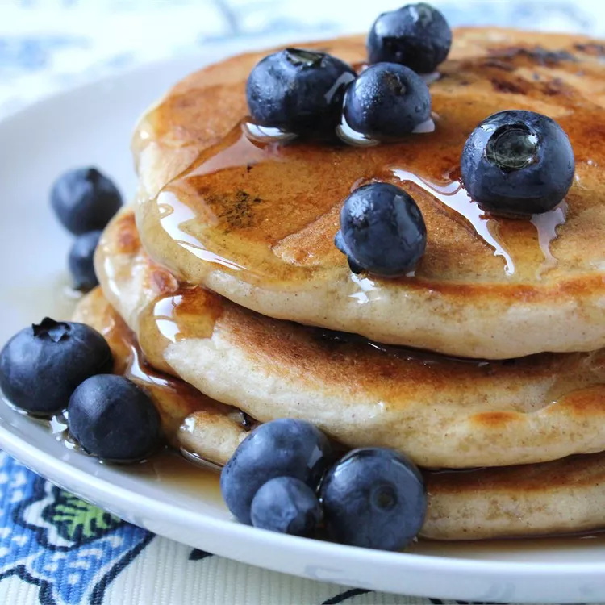

Classic Pancakes

Description
These classic pancakes are light, fluffy, and perfect for breakfast or brunch.
Made with simple ingredients, they are quick to whip up and taste amazing with syrup, butter, or fresh fruit.
Classic Pancakes Ingredients
- 1 cup all-purpose flour
- 2 tablespoons sugar
- 1 teaspoon baking powder
- 0.5 teaspoon baking soda
- 0.25 teaspoon salt
- 1 cup buttermilk
- 1 egg
- 2 tablespoons melted butter
- 1 teaspoon vanilla extract
- Butter or oil for cooking
- Maple syrup, for serving (optional)
Steps
- In a large bowl, whisk together the flour, sugar, baking powder, baking soda, and salt.
- In another bowl, whisk the buttermilk, egg, melted butter, and vanilla extract.
- Pour the wet ingredients into the dry ingredients and mix until just combined. Do not overmix; some lumps are okay.
- Heat a non-stick pan or griddle over medium heat and lightly grease with butter or oil.
- Pour 1/4 cup of batter onto the pan for each pancake. Cook until bubbles form on the surface, then flip and cook until golden brown.
- Repeat with the remaining batter.
- Serve warm with maple syrup, butter, or your favorite toppings.
Home